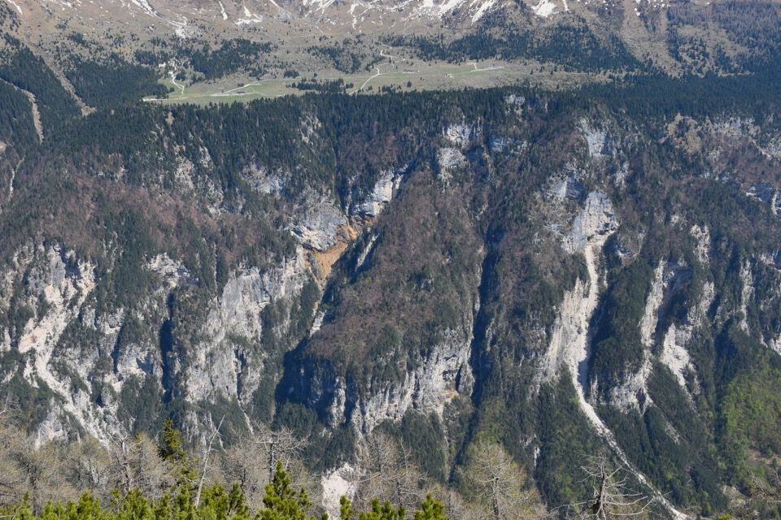
I Piani del Montasio, visti dal Pic di Babe, con gli erti
boschi pensili che sovrastano Piani e Stretti. Non serve
dilungarsi su quale sia il rio Rosso...
Itinerario alternativo al troi dal Cuelát, più ad Est
di questo: meno bello ma più misterioso; essendo roba di
cacciatori, devo tacere: chi è determinato lo trova.
Partiti io e Luciana per fare una passeggiata, siamo stati
sorpresi da una fitta nevicata che ha reso l'uscita una vera e
propria avventura che non vi raccomando.
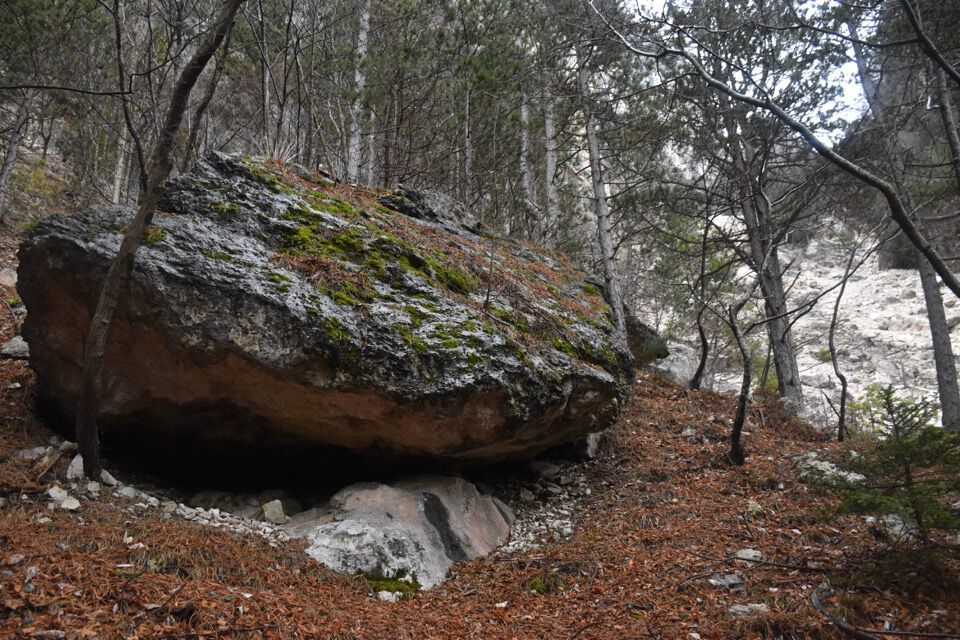 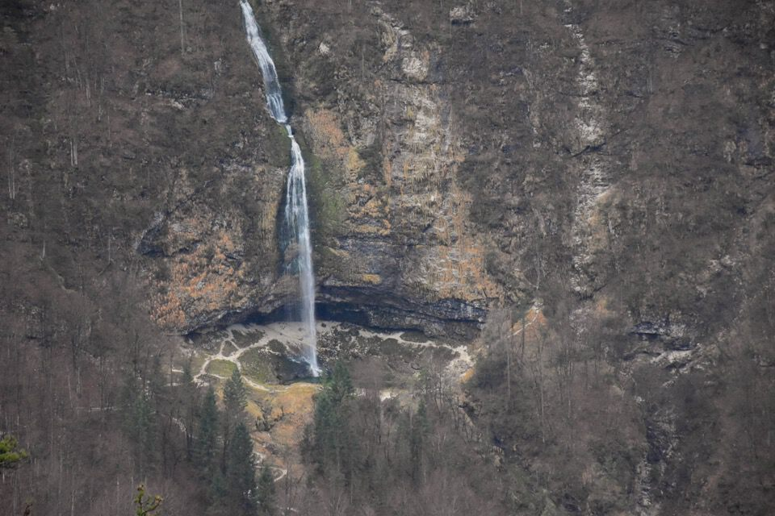 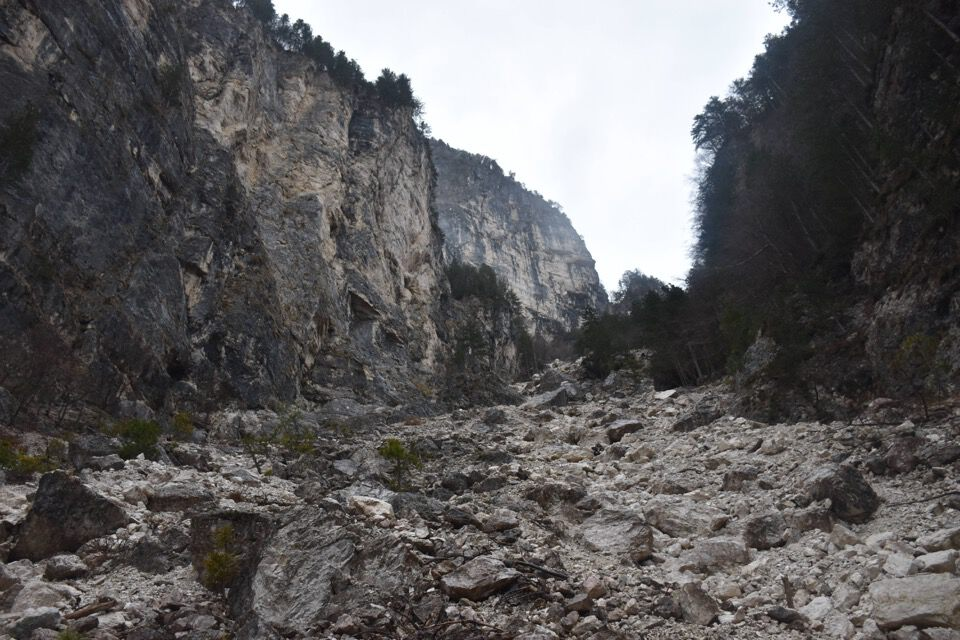
Oh ecco la cengetta di cui mi parlava Riccardo!
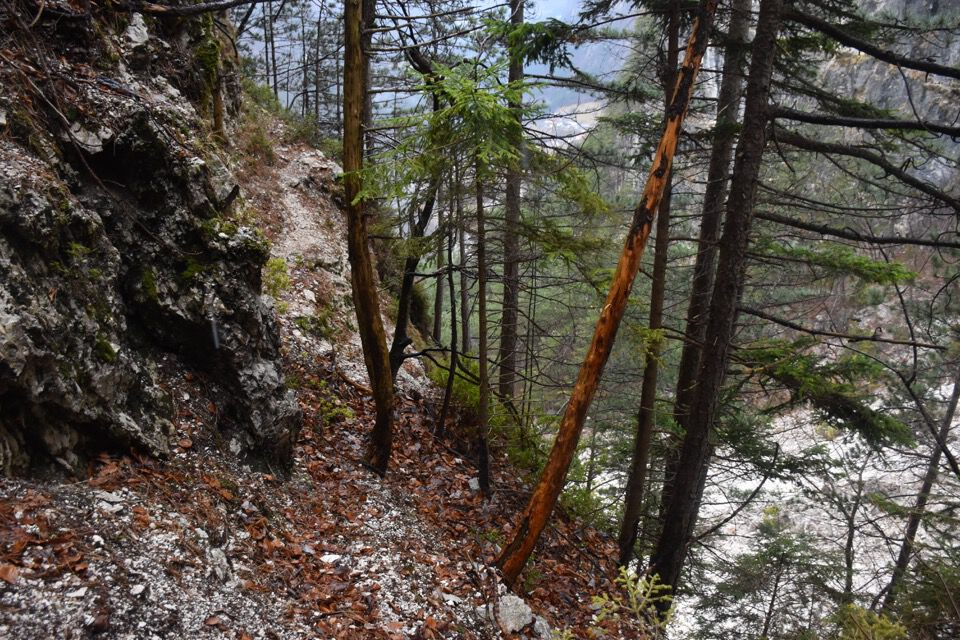
Vecchi segni antropici sulla Pale dai Salens (=
maggiociondoli).
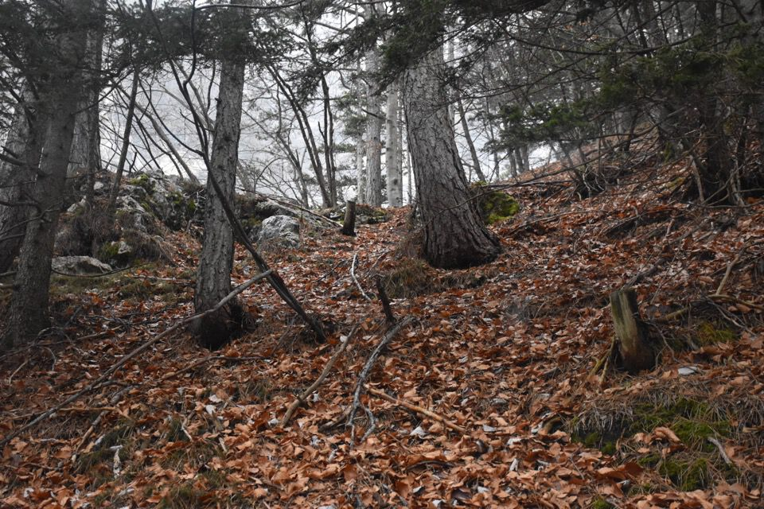
Ambiente dantesco.
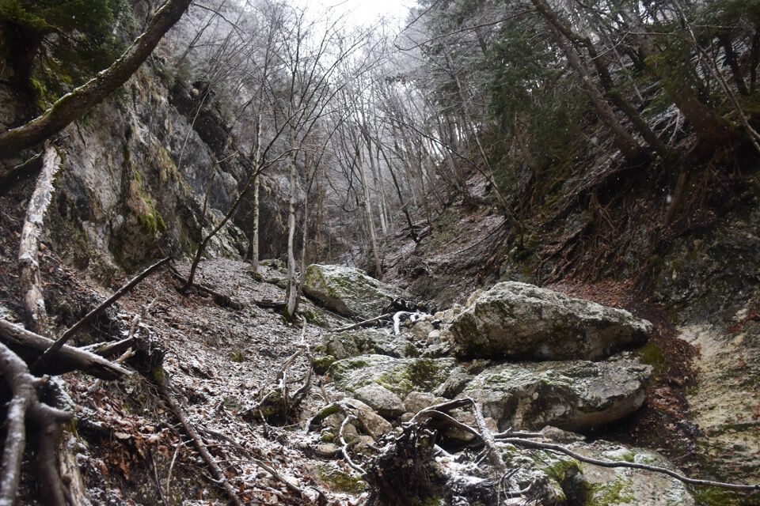
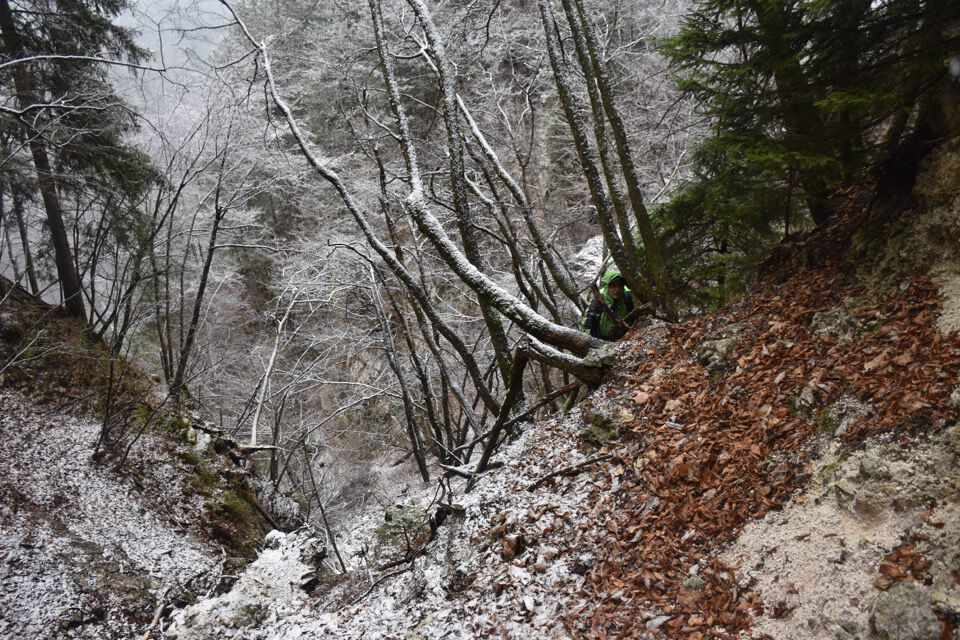
Clapusç sacrificali.
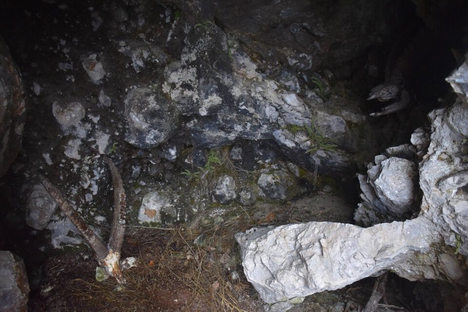
Doveva uscire il sole: le previsioni hanno
cannato.
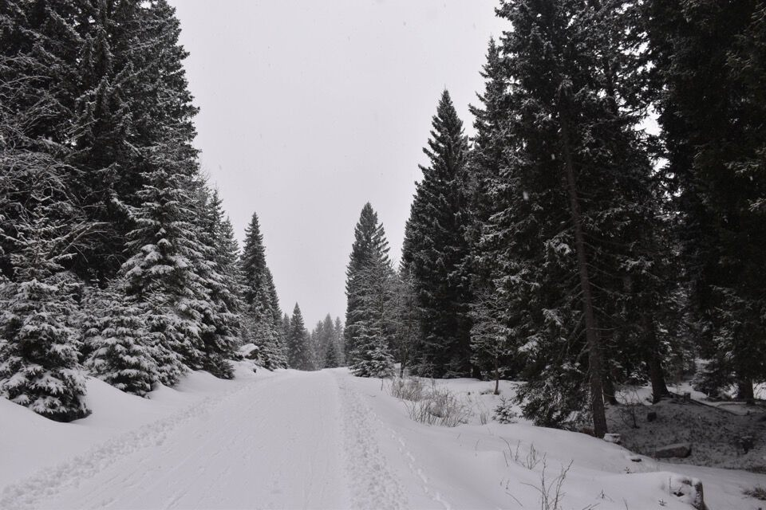 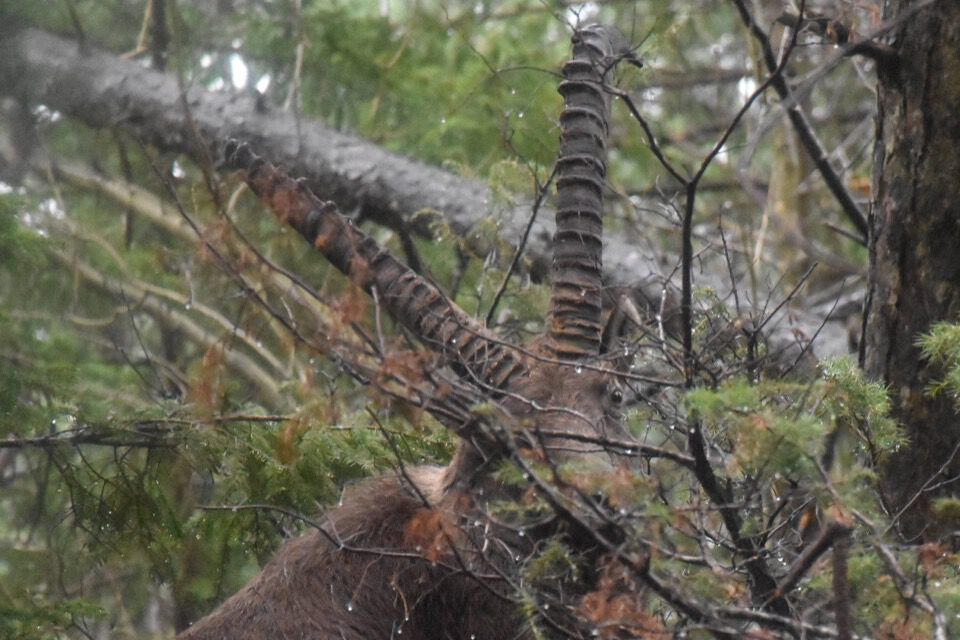
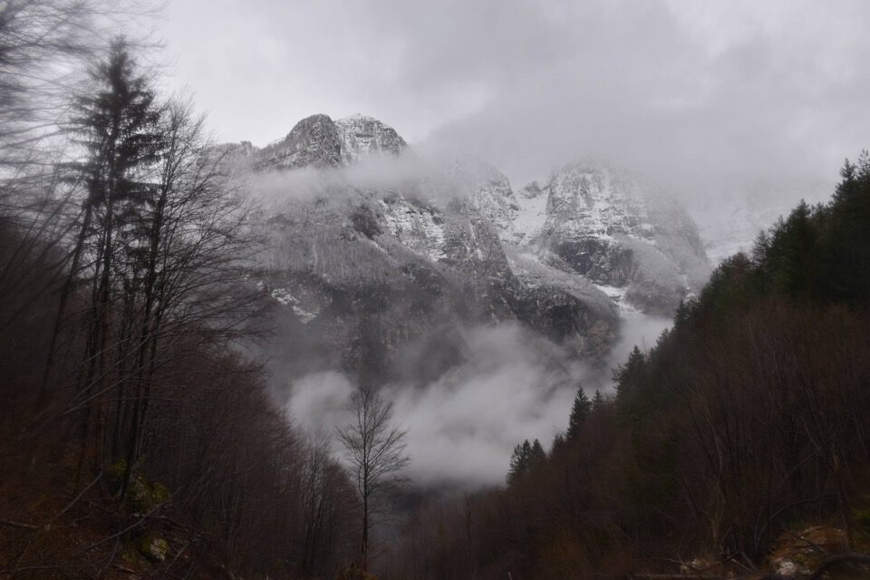
***
Vi ho annoiato
assai ma non ho alcuna pretesa. Ho scritto come vi avrei
parlato: qualcuno mi avrà capito, specialmente chi della vita
non ha che dolore e delusione. I monti lo innalzano verso
l'universo, incontro alle stelle, offrendogli un dolce
balsamo che gli placa per un istante l'animo ed il cuore e
gli fa bere di quel nettare ristoratore che ancora sa dare la
natura colla sua sincerità, colla sua semplicità, colla sua
bellezza, col suo profumo e colla visione dell'infinito.
(*)
(*) Tratto da: Umberto Tinivella, Alpi e Alpinismo
(1942)